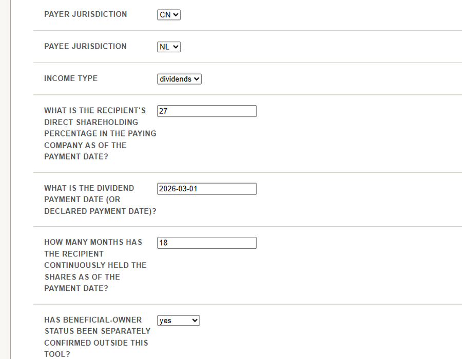
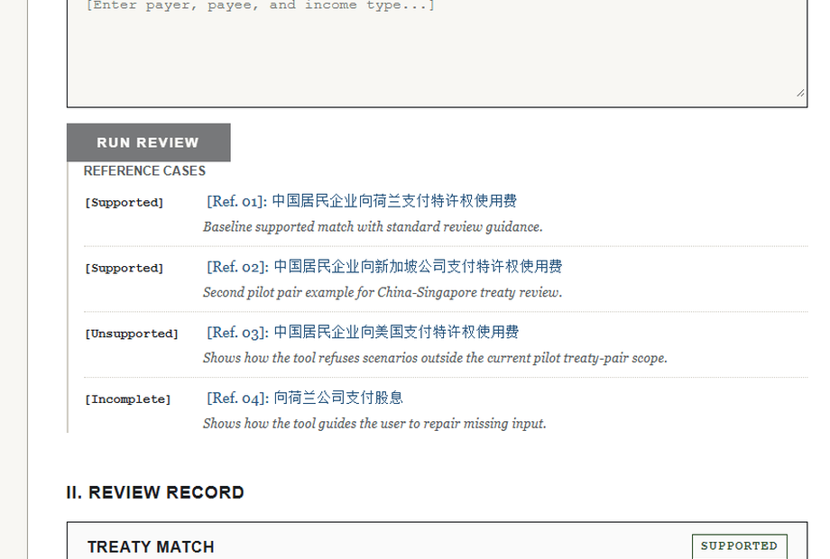
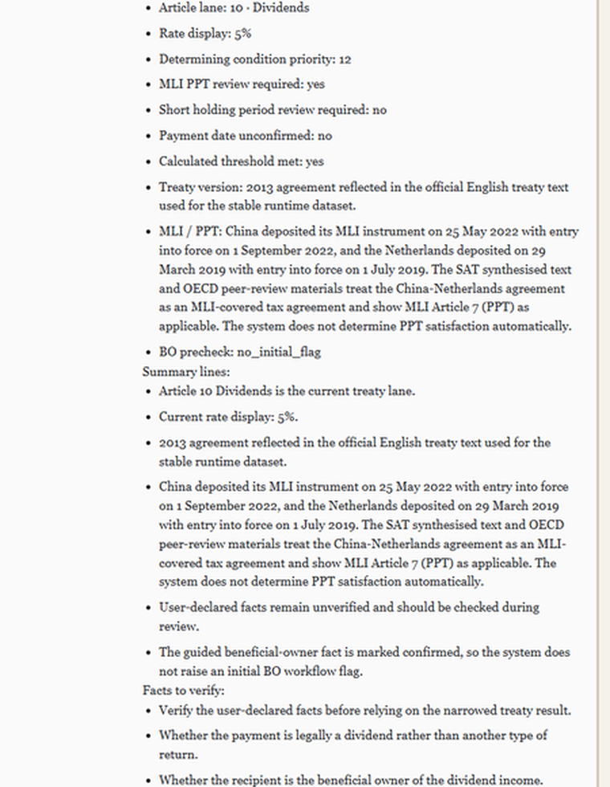
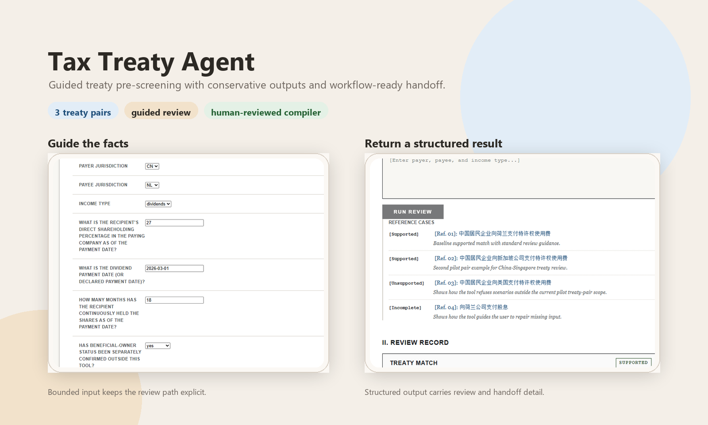

Move faster through the first-pass review
Instead of starting every case from a blank document, the tool gathers the key treaty facts, narrows the review lane, and returns a structured package for follow-up work.
Start with a faster first-pass review before full legal or tax analysis. The tool guides key facts, narrows to the treaty lane in scope, and returns a structured handoff for the next reviewer.
It is designed to save time at the front of the workflow, not to replace a final tax opinion.



Instead of starting every case from a blank document, the tool gathers the key treaty facts, narrows the review lane, and returns a structured package for follow-up work.
Unsupported or ambiguous cases are surfaced explicitly. The workflow is designed to help teams avoid accidental overreach in high-stakes tax scenarios.
Results are packaged with treaty lane references, review signals, and workflow-ready notes so the next reviewer does not have to reconstruct the first pass from scratch.
The product is not an open-ended chatbot. It is a bounded pre-screening workflow that helps the first reviewer organize facts quickly and hand the case forward cleanly.
The guided path asks for the facts needed to place the payment in the right treaty branch, such as payment type, treaty pair, ownership status, and dividend-specific thresholds where relevant.
The engine uses structured treaty data and conservative rule logic to determine whether the case stays in scope, needs more facts, or should be rejected as unsupported.
Outputs include the pre-review state, next actions, source-aware references, and handoff notes for the human reviewer who takes the case further.

The product focuses on a bounded set of treaty pairs and income types so the review path remains auditable and conservative.
Dividends, interest, royalties
Dividends, interest, royalties
Dividends, interest, royalties
It helps teams move faster through the front of the workflow, but it does not automate the final legal judgment.
The output is a first-pass pre-review, not a substitute for legal, tax, or internal approval.
The tool surfaces these items for human follow-up instead of pretending to resolve them automatically.
When a case falls outside the supported treaty pairs or lanes, the workflow says so directly.